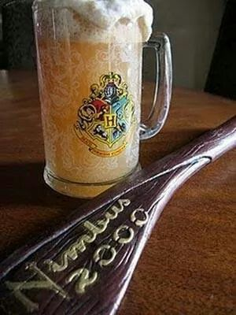

Si has escuchado hablar de Harry Potter, probablemente sabrás de que bebida estamos hablando,
una sabrosa cerveza de mantequilla que te permitirá dar rienda suelta a algunas de tus mayores fantasías cinematográficas.
Aunque se conozca la cerveza de mantequilla debido a Harry Potter, lo cierto es que esta tiene su origen en la Inglaterra medieval, concretamente en la época de los Tudor.
La receta original era servida más caliente y de un gusto más aceptado para la mayoría.

Ingredientes
100g de azúcar Morena
30 g de Mantequilla
5 clavos de olor
4 yemas de huevo
1 litro de Cream Soda para la versión sin alcohol
1 litro de cerveza tostada para versión con alcohol